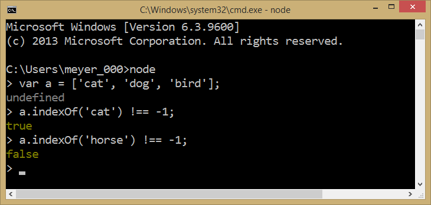

10 Cool Javascript Tips and Tricks
Check For Greater Than Zero
If you want to quickly check if an integer is greater than zero you can just use !!
Convert String to Number
Also Check that a String Is a Number
Just use the + operator.
Conditional Shortcut
If you don't want to use an if statement you can use the && operator.
Get The End of An Array
If you want to get a certain number of elements at the end of an array use the slice command and specify the number of elements you want using a negative number.

Truncate An Array With .length
If you only want the front part of an array store it into a temp array and change the length.
Shortcut To Shuffling an Array
Just use the sort function and insert a random() function as a parameter.
Default Values
If you're setting a variable with another variable but aren't sure if it's null you can sue this trick to set a default value to the variable.
Test The Runtime of a Function
Use the time() and timeEnd() functions to test the runtime of a function.

Check For An Element In An Array
If you don't want to create a for loop to interate over an array to see if an element exists in it just use the .indexOf() function and some tricky code.
Array to CSV
If you want to turn an array into a comma separated string just use the join function.